Last updated: 2017-02-10
Code version: 53fce4d
# Biobase is for accessing expressionSet objects
library(Biobase)
# Load Buettner data
devtools::install_github("jhsiao999/singleCellRNASeqHumanTungiPSC")
library(singleCellRNASeqHumanTungiPSC)
# Extract expression data
eset <- get(data("HumanTungiPSC"))
# Access the count matrix
counts <- exprs(eset)
dim(counts)[1] 12235 560Binary_count = 1 * (counts != 0)
Boolean_count = 2*( Binary_count - 1/2)
# Access cell sample information
#pData(eset)
#cluster <- pData(eset)$Cluster
#table(cluster)
barlabels = pData(HumanTungiPSC)
total_counts = apply(counts,2,sum)We run the Logistic flash with greedy algorithm
Before run the algorithm, we have some guess or hypothesis on the missing pattern
source('~/HG/LogisticFlash/Rcode/GD_Rfuncrtions.R')
# MissPattern = GL_flash(Boolean_count,K = 20)
# saveRDS(MissPattern,file = "~/HG/LogisticFlash/data/MissPatternHumanTungiPSC_K20.rds")
MissPattern = readRDS("~/HG/LogisticFlash/data/MissPatternHumanTungiPSC_K20.rds")In the following result, we find that
we can guess that:
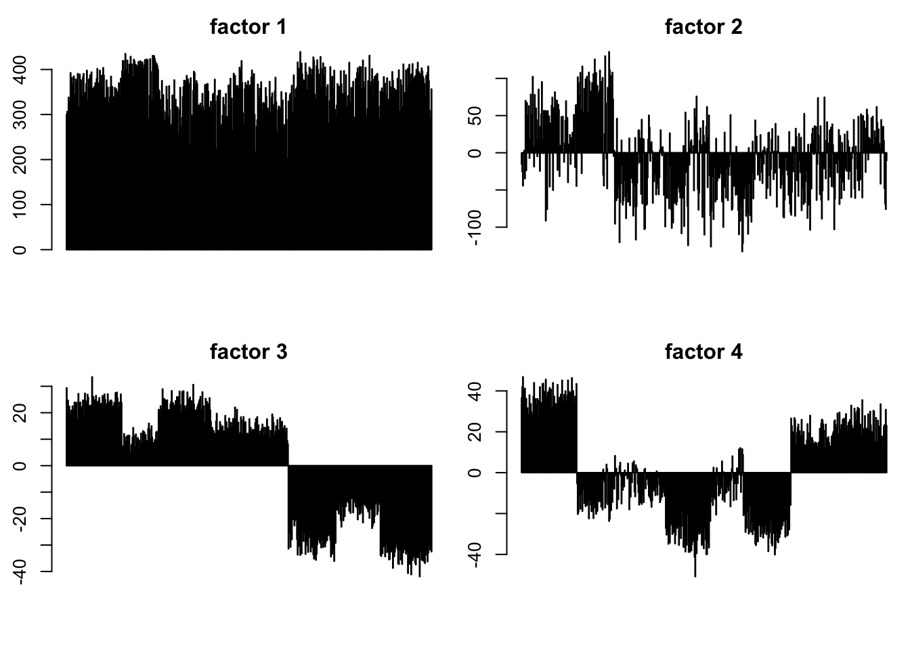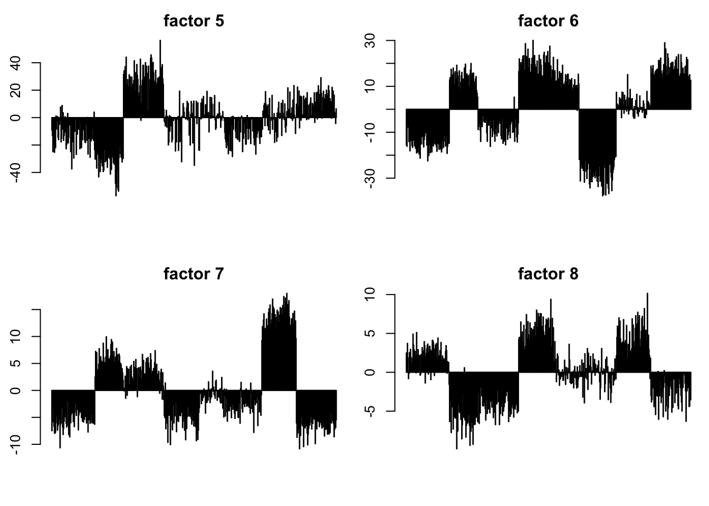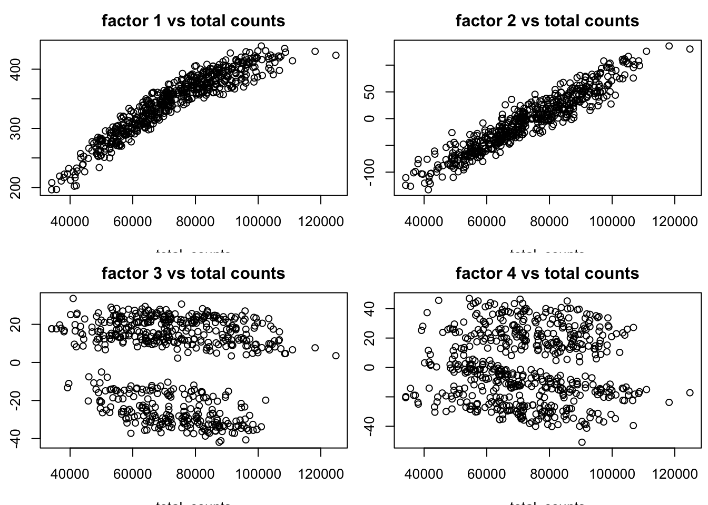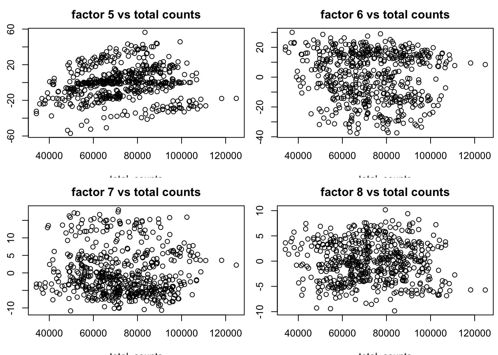
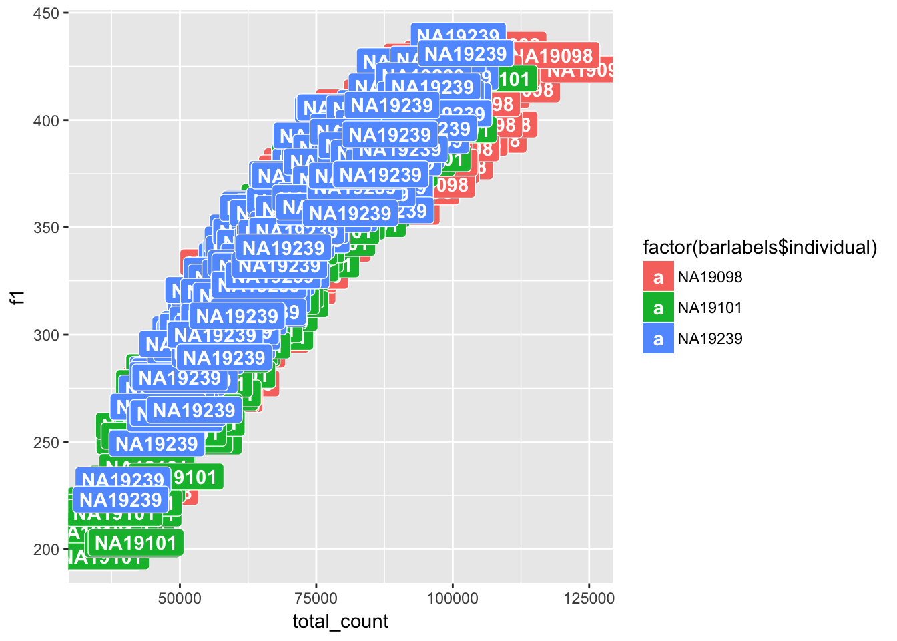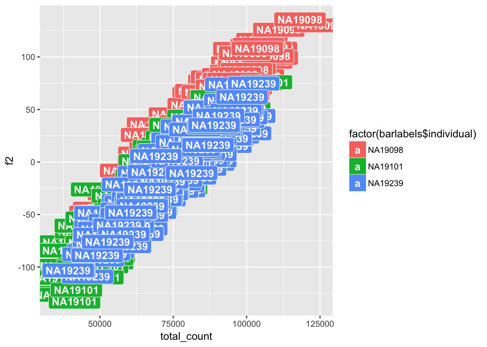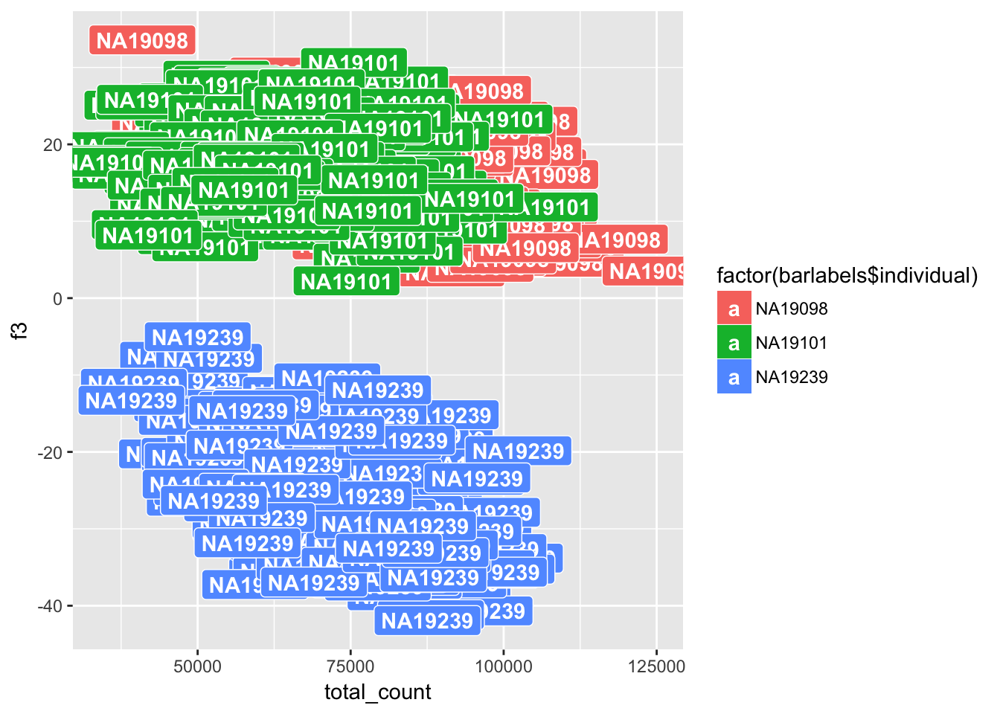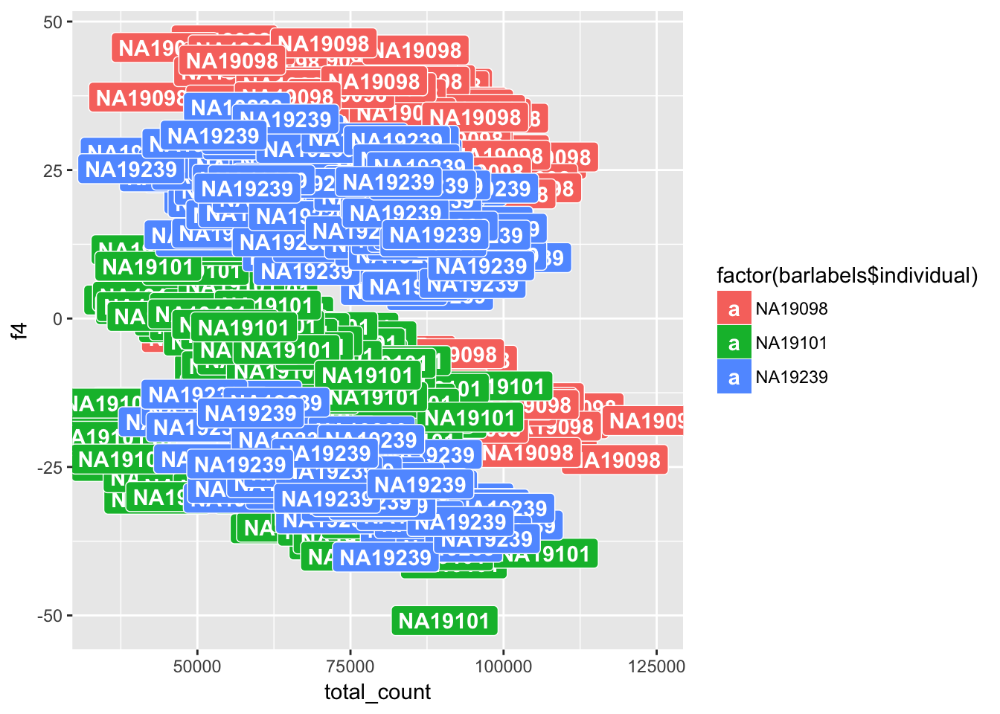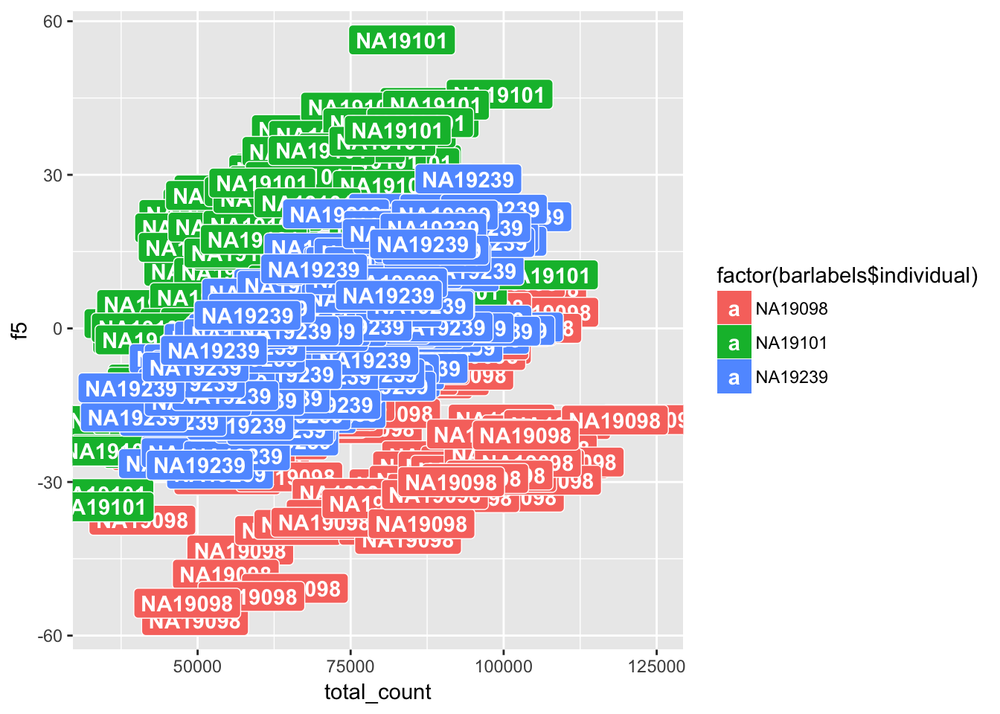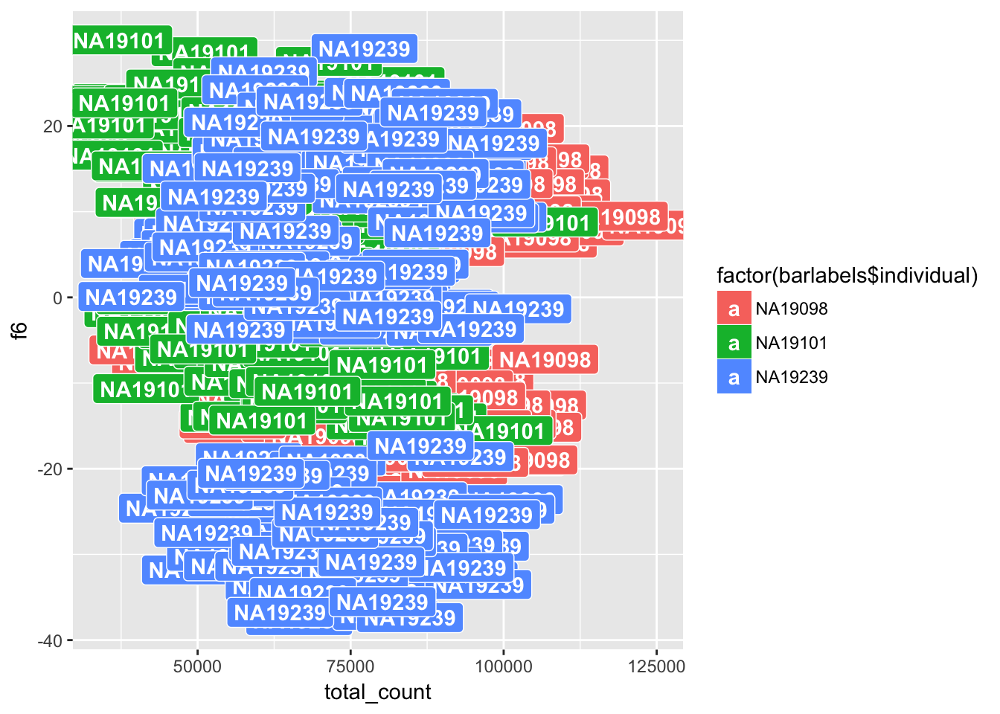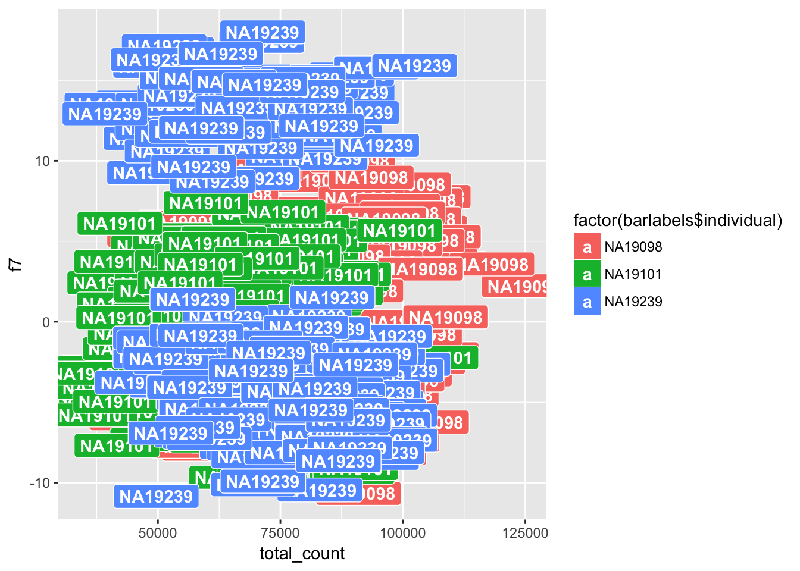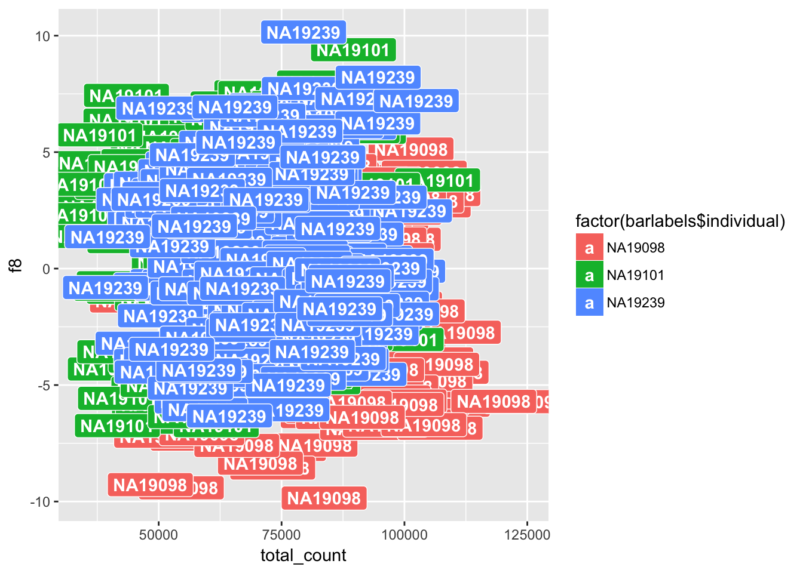
sessionInfo()R version 3.3.0 (2016-05-03)
Platform: x86_64-apple-darwin13.4.0 (64-bit)
Running under: OS X 10.12.3 (unknown)
locale:
[1] en_US.UTF-8/en_US.UTF-8/en_US.UTF-8/C/en_US.UTF-8/en_US.UTF-8
attached base packages:
[1] parallel stats graphics grDevices utils datasets methods
[8] base
other attached packages:
[1] ggplot2_2.2.1
[2] MASS_7.3-45
[3] singleCellRNASeqHumanTungiPSC_0.99.0
[4] Biobase_2.28.0
[5] BiocGenerics_0.14.0
[6] workflowr_0.3.0
[7] rmarkdown_1.3
loaded via a namespace (and not attached):
[1] Rcpp_0.12.9 plyr_1.8.4 git2r_0.18.0
[4] iterators_1.0.8 tools_3.3.0 digest_0.6.12
[7] tibble_1.2 evaluate_0.10 memoise_1.0.0
[10] gtable_0.2.0 lattice_0.20-34 Matrix_1.2-8
[13] foreach_1.4.3 rstudioapi_0.6 curl_2.3
[16] yaml_2.1.14 withr_1.0.2 httr_1.2.1
[19] stringr_1.1.0 knitr_1.15.1 devtools_1.12.0
[22] REBayes_0.73 rprojroot_1.2 grid_3.3.0
[25] R6_2.2.0 irlba_2.1.2 flashr_0.1.1
[28] ashr_2.0.5 magrittr_1.5 scales_0.4.1
[31] backports_1.0.5 codetools_0.2-15 htmltools_0.3.5
[34] assertthat_0.1 colorspace_1.3-2 labeling_0.3
[37] stringi_1.1.2 Rmosek_7.1.2 lazyeval_0.2.0
[40] munsell_0.4.3 doParallel_1.0.10 pscl_1.4.9
[43] truncnorm_1.0-7 SQUAREM_2016.8-2 This R Markdown site was created with workflowr